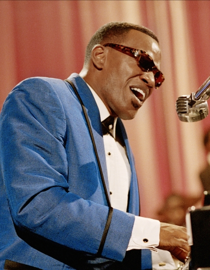

<!doctype html>

<html class="no-js" lang="en">

<head>
  <meta charset="utf-8" />
  <meta http-equiv="x-ua-compatible" content="ie=edge">
  <meta name="viewport" content="width=device-width, initial-scale=1.0">
  <title>GDES1060 – MW-proj1.4</title>
  <link rel="stylesheet" href="css/foundation.css">
  <link rel="stylesheet" href="css/motion-ui.min.css" />
  <link rel="stylesheet" href="css/app.css">
</head>
</html>

<body>

  <!-- Your code goes here -->
<header> 
  <div style="background-color: black ; padding: 10px;">
   <a href="index.html">
  
</a>
</div>
</header>
   <div class="breadcrumb">
        <p><a href="index.html" >Home</a> <a href="featured.html">Featured</a></p>

<main>
  <div class="card" style="width: 415px;">
  <div class="card-divider">
    <h1><b>Featured Artist</b></h1>
  </div>
  <button class="button" type="button" data-toggle="example-dropdown">More Information</button>
<div class="dropdown-pane" id="example-dropdown" data-dropdown data-auto-focus="true">
   <h4><b>MARTINA MCBRIDE:THE POWER OF HER VOICE</b></h4>
   <div class="card-section">
    <p>For 25 years now McBride has been creating substantive, socially aware country music, her anthems of personal empowerment contributing a much-needed perspective to the genre. This exhibition explores one of country music’s most distinctive voices.</p>
     <a class="button" href="Fame.html">learn more</a>
   </div> 
 </div>
 
</div>

  <div class="card" style="width: 415px;">
  <div class="card-divider">
    <h1><b>Online Exhibit</b></h1>
  </div>
  <button class="button" type="button" data-toggle="example-dropdown2">More Information</button>
<div class="dropdown-pane" id="example-dropdown2" data-dropdown data-auto-focus="true">
   <h4><b> </b></h4>
   <div class="card-section">
    <p>Bring the Country Music Hall of Fame and Museum’s in-depth storytelling and unmatched collection directly to your digital device. Click here to explore rich multimedia experiences, adapted or curated specifically for an online audience.</p>
   </div> 
 </div>
  
</div>

 <div class="card" style="width: 415px;">
  <div class="card-divider">
    <h1><b>New Faces</b></h1>
  </div>
  <button class="button" type="button" data-toggle="example-dropdown3">More Information</button>
<div class="dropdown-pane" id="example-dropdown3" data-dropdown data-auto-focus="true">
   <h4><b>Country Music Hall Of Fame: Class of 2021</b></h4>
   <div class="card-section">
    <p>Just announced: drummer Eddie Bayers, singer-pianist-composer Ray Charles, steel guitarist Pete Drake, and mother-daughter duo the Judds are joining the Country Music Hall of Fame. New members are elected annually by an anonymous panel of industry leaders chosen by CMA.</p>
   </div> 
 </div>
   
 </div>
  


 
  


<footer>
  <div style="background-color: orange ; padding: 10px;">
<p> Country Music Hall of Fame & Museum
222 Fifth Avenue South
Nashville, Tennessee 37203
615-416-2001
info@countrymusichalloffame.org</p>


</div>
</footer>

</main>


  <script src="js/vendor.js"></script>
  <script src="js/foundation.js"></script>

  <script>
    $(document).foundation();
  </script>

</body>

</html>